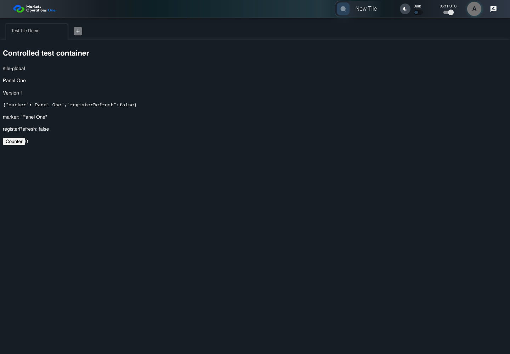
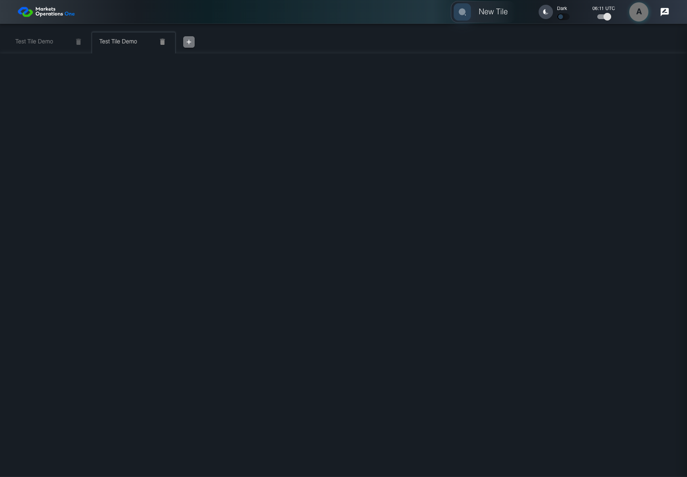
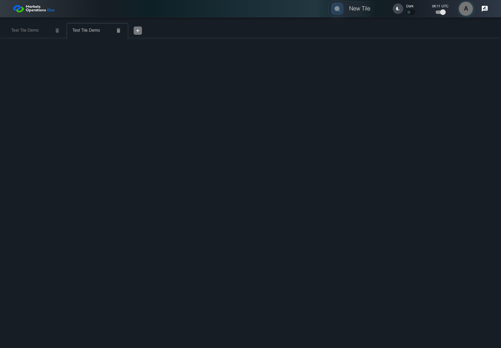

UI-SHL-019 open the same tile in a second workspace
PASS · application/run-050/ui-shl-019-open-the-same-tile-in-a-second-workspace-9252f7e9900b-attempt-1 · ACTUAL_APPLICATION_LOCAL_SERVICES
Actual current React shell and browser storage. Controlled login/validation/activity renewal, UI-USER-01 permissions, catalog, and SystemJS React component. Markers, counter, and registered refresh callback are controlled fixture observations. No real business tenant or BFF authorization acceptance.
2026-10-22T06:11:07.447Z to 2026-10-22T06:11:10.040Z
Assertions and result · Artifact manifest · Exact run inputs and source hashes
Result SHA-256:a216afe6755fb68b4f888c5e58f8e56d7cfbcd1aeb94b733deb913ba491ca8d8Screenshot capture: CAPTURED. Named frames: 8.
Step screenshot evidence: COMPLETE. 7/7 canonical steps have execution screenshots.
Canonical step timeline
Given User A is authenticated as fixture UI-USER-01 with the case-specific permissions
Execution: PASSED.1. step-01 Visible state after step 1: Given User A is authenticated as fixture UI-USER-01 with the case-specific permissions
2026-10-22T06:11:08.381Z · 1440×1000
Step: /Users/lushevol/code/github/ratan-release-impact/workbench/tasks/ui-test-coverage-20261022/test-cases.md:5969
SHA-256:12daefa67a4f04ae401397686f8bf2df8cf50cba68acf9a684bab3b744afdc2fAnd W1 already contains Test Tile
Execution: PASSED.
2. step-02 Visible state after step 2: And W1 already contains Test Tile
2026-10-22T06:11:09.243Z · 1440×1000
Step: /Users/lushevol/code/github/ratan-release-impact/workbench/tasks/ui-test-coverage-20261022/test-cases.md:5970
SHA-256:3015fd2cc0d66417b3cc6a296393a4c00c5eceda961f4839f024d2c3ef8c8bfaWhen User A clicks section with text "New Tile" inside the shell application bar
Execution: PASSED.3. step-03 Visible state after step 3: When User A clicks section with text "New Tile" inside the shell application bar
2026-10-22T06:11:09.397Z · 1440×1000
Step: /Users/lushevol/code/github/ratan-release-impact/workbench/tasks/ui-test-coverage-20261022/test-cases.md:5971
SHA-256:7adf237eca7d3f3d76c457251fea4f63ea19e6a42832c96349887f7689084c98And User A clicks section with text "Test Tile" inside the tile group with subtitle "Demo" in the fixture category inside the right drawer titled "Tile Options"
Execution: PASSED.
4. step-04 Visible state after step 4: And User A clicks section with text "Test Tile" inside the tile group with subtitle "Demo" in the fixture category inside the right drawer titled "Tile Options"
2026-10-22T06:11:09.533Z · 1440×1000
Step: /Users/lushevol/code/github/ratan-release-impact/workbench/tasks/ui-test-coverage-20261022/test-cases.md:5972
SHA-256:b9c7beac8e81be779523eaac66ece549eea24d439e5156baac7ae109851e5060Then the tab count inside the tablist named "workspaces" equals 2
Execution: PASSED.
5. step-05 Visible state after step 5: Then the tab count inside the tablist named "workspaces" equals 2
2026-10-22T06:11:09.599Z · 1440×1000
Step: /Users/lushevol/code/github/ratan-release-impact/workbench/tasks/ui-test-coverage-20261022/test-cases.md:5973
SHA-256:b9c7beac8e81be779523eaac66ece549eea24d439e5156baac7ae109851e5060And tab with source identity "Workspace Name textbox value Test Tile Demo" inside the shell tablist named "workspaces" is selected
Execution: PASSED.
6. step-06 Visible state after step 6: And tab with source identity "Workspace Name textbox value Test Tile Demo" inside the shell tablist named "workspaces" is selected
2026-10-22T06:11:09.646Z · 1440×1000
Step: /Users/lushevol/code/github/ratan-release-impact/workbench/tasks/ui-test-coverage-20261022/test-cases.md:5974
SHA-256:b9c7beac8e81be779523eaac66ece549eea24d439e5156baac7ae109851e5060And exactly 2 workspace textboxes named "Workspace Name" have value "Test Tile Demo" inside the shell tablist
Execution: PASSED.
7. step-07 Visible state after step 7: And exactly 2 workspace textboxes named "Workspace Name" have value "Test Tile Demo" inside the shell tablist
2026-10-22T06:11:09.727Z · 1440×1000
Step: /Users/lushevol/code/github/ratan-release-impact/workbench/tasks/ui-test-coverage-20261022/test-cases.md:5975
SHA-256:487827229eae03d2ed5dd097598245c5fea83958b70fa3c66657ded072309bc9
Additional named frames

The final visible state after the named test assertions.
2026-10-22T06:11:09.806Z · 1440×1000Step: Test source: /Users/lushevol/code/github/ratan-release-impact/workbench/e2e/audit-specs/shell-expanded.spec.ts:101
SHA-256:
487827229eae03d2ed5dd097598245c5fea83958b70fa3c66657ded072309bc9Screenshots establish visible state only. Assertions and traces support functional claims.